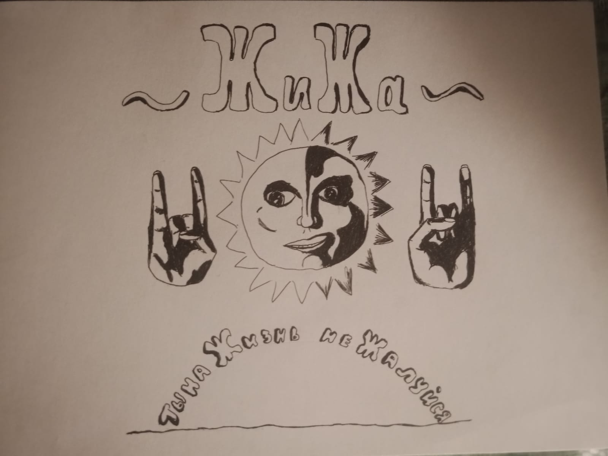

О проекте:

ЖиЖа - творческий дует двух друзей и товарищей. Абривиатура ЖиЖа означает - "На Жизнь не Жалуйся"
Был основан в 2021 году. Группа базируется на создании авторской музыки и автороского кино. Имеет свой юмористический ТГ канал, Ютуб канал и фирменную футболку, котоорая на данный момент существует лишь в двух экземплярах.
Творческие состав группы:
Прочие участники:
Творческая история
Первыми участниками группы стали ВырвиGlaz'studio и Igorantivirus. На февраль 2024 года состав группы не изменился.
Первой их работой ситал короткометражный фильм в жанре Хоррор под названием "Проклятый старый Гусь или Гагага!". Фильм возымел огромный успех в узких кругах.
Следующей их работой стала музыкальная композиция "Любовь вурдалака". Первое выступление с этой композицей было на открытом предствавлении в театре.
В дальнейшем были сняты такие фильмы, как "Кулинарное шоу "Готовим с Петровичем"", "Проклятый старый дом, а там...", "Клозет" и "Жуткий курьер".
Эти видео были сняты всеми участниками группы.
Так жы был небольшие авторские видео, которые снимал один какой-либо участник группы:
"Песенка про енота", "Выход из мира в реальной жизни", "Обычный поход к доктору"
Единственная музыкальная композиция, которая была выложена официальна от команды ЖиЖа - "Смерть поэта".
Так же от группы вышла песня "Амбар", полностью под авторством ВырвиGlaz'а.